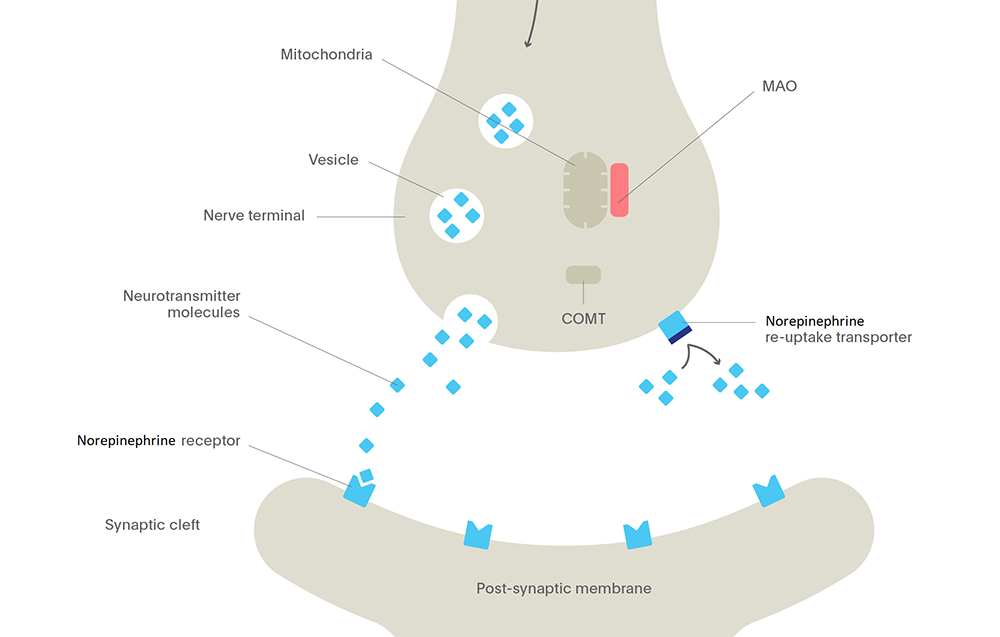

Dual SSRI NNRI
Adapted from references 1 & 2
The ratio of serotonin(5HT) to norepinephrine(NE) reuptake inhibition in select SNRIs:
| SNRI | Serotonin | Norepinephrine |
|---|---|---|
| Energon | 1x | 2x |
| Cymbalta | 16x | 1x |
| Effexor | 10x | 1x |
| Pristiq | 11x | 1x |
Energon is the ONLY SNRI with greater selectivity for norepinephrine versus serotonin reuptake inhibition